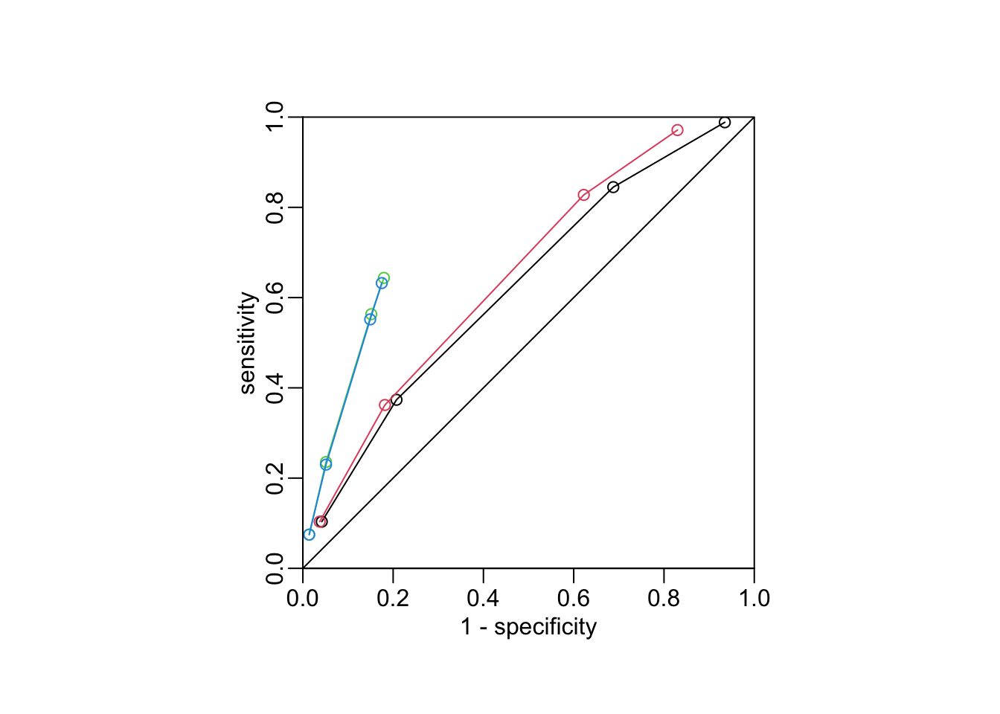

data_path <- paste0(Sys.getenv("HOME"), "/Library/CloudStorage/",
"OneDrive-OxfordUniversityClinicalResearchUnit/",
"GitHub/choisy/typhoid/")Manuscript analyses
Global parameters
The path to the data:
Packages
library(dplyr)
library(purrr)
library(magrittr)
library(car)Utilitary functions
A function that reads a clean data set:
read_clean_data <- function(file) readRDS(paste0(data_path, "clean_data/", file))A function that selects the positive values of a vector:
get_greater_than <- function(x, t) x[x > t]
get_lower_than <- function(x, t) x[x < t]Sensitivity and specificity:
sensitivity <- function(x) x[2, 2] / (x[2, 2] + x[2, 1])
specificity <- function(x) x[1, 1] / (x[1, 1] + x[1, 2])
ppv <- function(x) x[2, 2] / (x[1, 2] + x[2, 2])Reading the clean data
The Nepal dataset:
nepal <- "nepal.rds" |>
read_clean_data() |>
mutate(across(c(cough, diarrhea, vomiting, abdominal_pain, constipation, headache),
as.logical),
across(c(age, platelets), as.numeric)) |>
select(-starts_with("score"))The Cambodia and Bangladesh dataset:
cambodia_bangladesh <- "cambodia_bangladesh.rds" |>
read_clean_data() |>
# mutate(across(fever, ~ .x > 2),
# across(where(is.logical), logical2factor)) |>
select(-country) |>
select(-fever) |>
na.exclude()Analyses
Number of missing values:
nepal |>
map_int(~ sum(is.na(.x))) |>
get_greater_than(0) age platelets
2 8 Number of negative and positive cultures:
nepal |>
pull(culture) |>
table()
FALSE TRUE
429 174 Quantiles of age:
nepal |>
pull(age) |>
quantile(na.rm = TRUE) 0% 25% 50% 75% 100%
2 14 20 26 57 Quantiles of fever duration:
nepal |>
pull(fever) |>
quantile(na.rm = TRUE) 0% 25% 50% 75% 100%
3 4 5 6 21 Uni-variable logistic regressions:
map_dbl(nepal[-1],
~ glm(nepal$culture ~ .x, binomial) |>
summary() |>
coef() |>
extract(2, 4)) |>
get_lower_than(.05) age cough diarrhea abdominal_pain headache
0.0125720666 0.0171495034 0.0000289745 0.0181269239 0.0251982239
WBC platelets ALT IgM CRP
0.0034096852 0.0177936137 0.0034601632 0.0185161537 0.0002008074 Multivariable logistic regression:
(multi <- glm(culture ~ headache + abdominal_pain + diarrhea + cough, binomial, nepal))
Call: glm(formula = culture ~ headache + abdominal_pain + diarrhea +
cough, family = binomial, data = nepal)
Coefficients:
(Intercept) headacheTRUE abdominal_painTRUE diarrheaTRUE
-1.5151 0.5612 0.3201 0.7893
coughTRUE
-0.5064
Degrees of Freedom: 602 Total (i.e. Null); 598 Residual
Null Deviance: 724.6
Residual Deviance: 693.8 AIC: 703.8Anova(multi)Analysis of Deviance Table (Type II tests)
Response: culture
LR Chisq Df Pr(>Chisq)
headache 3.6193 1 0.0571115 .
abdominal_pain 2.6057 1 0.1064817
diarrhea 14.1708 1 0.0001669 ***
cough 7.1375 1 0.0075487 **
---
Signif. codes: 0 '***' 0.001 '**' 0.01 '*' 0.05 '.' 0.1 ' ' 1Computing the score:
nepal %<>% mutate(score = headache + abdominal_pain + diarrhea + ! cough)The values of the score:
table(nepal$score)
0 1 2 3 4
30 131 288 118 36 tmp <- nepal |>
mutate(score0 = score < 1) |>
with(table(culture, score0))
tmp score0
culture FALSE TRUE
FALSE 401 28
TRUE 172 2ppv(tmp)[1] 0.06666667tmp <- nepal |>
mutate(score1 = score >= 1) |>
with(table(culture, score1))
tmp score1
culture FALSE TRUE
FALSE 28 401
TRUE 2 172ppv(tmp)[1] 0.3001745tmp <- nepal |>
mutate(score1_CRP = score >= 1 & CRP > "<10") |>
with(table(culture, score1_CRP))
tmp score1_CRP
culture FALSE TRUE
FALSE 73 356
TRUE 5 169ppv(tmp)[1] 0.3219048tmp <- nepal |>
mutate(score1_IgM = score >= 1 & IgM > 0) |>
with(table(culture, score1_IgM))
tmp score1_IgM
culture FALSE TRUE
FALSE 352 77
TRUE 62 112ppv(tmp)[1] 0.5925926tmp <- nepal |>
mutate(score1_CRP_IgM = score >= 1 & IgM > 0 & CRP != "<10") |>
with(table(culture, score1_CRP_IgM))
tmp score1_CRP_IgM
culture FALSE TRUE
FALSE 354 75
TRUE 64 110ppv(tmp)[1] 0.5945946score_mat1 <- map(1:4,
~ nepal |>
mutate(score1 = score >= .x) |>
with(table(culture, score1)))
map_dbl(score_mat1, ppv)[1] 0.3001745 0.3325792 0.4220779 0.5000000(sens1 <- map_dbl(score_mat1, sensitivity))[1] 0.9885057 0.8448276 0.3735632 0.1034483(spec1 <- map_dbl(score_mat1, specificity))[1] 0.06526807 0.31235431 0.79254079 0.95804196score_mat2 <- map(1:4,
~ nepal |>
mutate(score1 = score >= .x & CRP > "<10") |>
with(table(culture, score1)))
map_dbl(score_mat2, ppv)[1] 0.3219048 0.3503650 0.4468085 0.5294118(sens2 <- map_dbl(score_mat2, sensitivity))[1] 0.9712644 0.8275862 0.3620690 0.1034483(spec2 <- map_dbl(score_mat2, specificity))[1] 0.1701632 0.3776224 0.8181818 0.9627040score_mat3 <- map(1:4,
~ nepal |>
mutate(score1 = score >= .x & IgM > 0) |>
with(table(culture, score1)))
map_dbl(score_mat3, ppv)[1] 0.5925926 0.6012270 0.6507937 0.6842105(sens3 <- map_dbl(score_mat3, sensitivity))[1] 0.64367816 0.56321839 0.23563218 0.07471264(spec3 <- map_dbl(score_mat3, specificity))[1] 0.8205128 0.8484848 0.9487179 0.9860140score_mat4 <- map(1:4,
~ nepal |>
mutate(score1 = score >= .x & IgM > 0 & CRP != "<10") |>
with(table(culture, score1)))
map_dbl(score_mat4, ppv)[1] 0.5945946 0.6000000 0.6451613 0.6842105(sens4 <- map_dbl(score_mat4, sensitivity))[1] 0.63218391 0.55172414 0.22988506 0.07471264(spec4 <- map_dbl(score_mat4, specificity))[1] 0.8251748 0.8508159 0.9487179 0.9860140score_CRP_mat <- expand.grid(1:4, 1:3) |>
with(map2(Var1, Var2,
~ nepal |>
mutate(score1_CRP = score >= .x & as.numeric(CRP) > .y) |>
with(table(culture, score1_CRP))))
matrix(map_dbl(score_CRP_mat, ppv), 4) [,1] [,2] [,3]
[1,] 0.3219048 0.3561254 0.3787234
[2,] 0.3503650 0.3750000 0.3957219
[3,] 0.4468085 0.4845361 0.5076923
[4,] 0.5294118 0.5000000 0.5555556matrix(map_dbl(score_CRP_mat, sensitivity), 4) [,1] [,2] [,3]
[1,] 0.9712644 0.71839080 0.51149425
[2,] 0.8275862 0.60344828 0.42528736
[3,] 0.3620690 0.27011494 0.18965517
[4,] 0.1034483 0.07471264 0.05747126opar <- par(pty = "s")
plot(1 - spec1, sens1, type = "o", xlim = 0:1, ylim = 0:1, col = 1, asp = 1,
xaxs = "i", yaxs = "i", xlab = "1 - specificity", ylab = "sensitivity")
lines(1 - spec2, sens2, type = "o", col = 2)
lines(1 - spec3, sens3, type = "o", col = 3)
lines(1 - spec4, sens4, type = "o", col = 4)
box(bty = "o")
abline(0, 1)
par(opar)